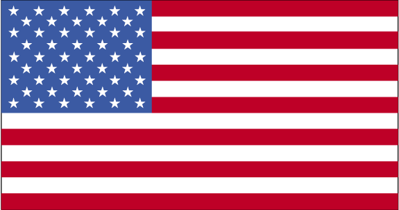
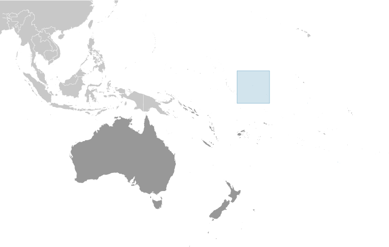
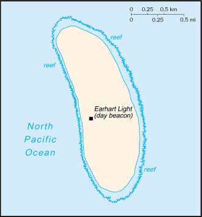

Australia-Oceania :: HOWLAND ISLAND
Introduction :: HOWLAND ISLAND
-
Discovered by the US early in the 19th century, the island was officially claimed by the US in 1857. Both US and British companies mined for guano until about 1890. Earhart Light, a day beacon near the middle of the west coast, was partially destroyed during World War II, but subsequently rebuilt; it is named in memory of the famed aviatrix Amelia EARHART. The island is administered by the US Department of the Interior as a National Wildlife Refuge.
Geography :: HOWLAND ISLAND
-
Oceania, island in the North Pacific Ocean, about half way between Hawaii and Australia0 48 N, 176 38 WOceaniatotal: 1.6 sq kmland: 1.6 sq kmwater: 0 sq kmabout three times the size of The Mall in Washington, DC0 km6.4 kmterritorial sea: 12 nmexclusive economic zone: 200 nmequatorial; scant rainfall, constant wind, burning sunlow-lying, nearly level, sandy, coral island surrounded by a narrow fringing reef; depressed central areaguano (deposits worked until late 1800s), terrestrial and aquatic wildlifethe narrow fringing reef surrounding the island can be a maritime hazardno natural fresh water resourcesalmost totally covered with grasses, prostrate vines, and low-growing shrubs; small area of trees in the center; primarily a nesting, roosting, and foraging habitat for seabirds, shorebirds, and marine wildlife
People and Society :: HOWLAND ISLAND
-
uninhabitednote: American civilians evacuated in 1942 after Japanese air and naval attacks during World War II; occupied by US military during World War II but abandoned after the war; public entry is by special-use permit from US Fish and Wildlife Service only and generally restricted to scientists and educators; visited annually by US Fish and Wildlife Service
Government :: HOWLAND ISLAND
-
conventional long form: noneconventional short form: Howland Islandetymology: named after the lookout on a whaling vessel who spotted the island in 1842unincorporated territory of the US; administered from Washington, DC, by the Fish and Wildlife Service of the US Department of the Interior as part of the National Wildlife Refuge Systemthe laws of the US, where applicable, applythe flag of the US is used
Transportation :: HOWLAND ISLAND
-
none; offshore anchorage only; note - there is one small boat landing area along the middle of the west coastEarhart Light, a day beacon near the middle of the west coast, was partially destroyed during World War II but rebuilt during the 1960s; today it is crumbling and in poor repair; named in memory of famed aviatrix Amelia EARHART
Military and Security :: HOWLAND ISLAND
-
defense is the responsibility of the US; visited annually by the US Coast Guard
Transnational Issues :: HOWLAND ISLAND
-
none